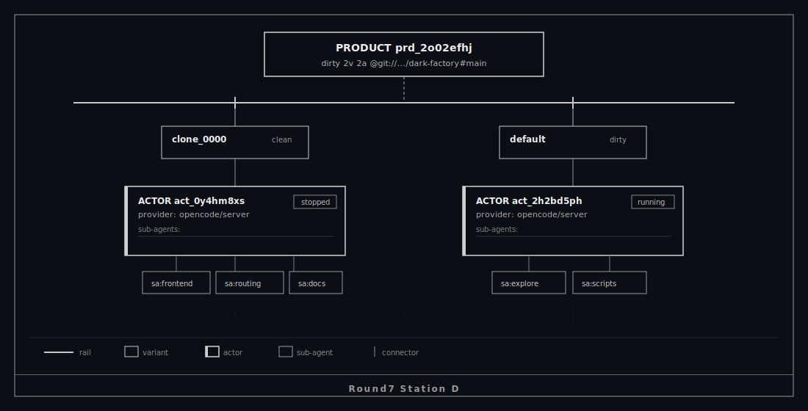
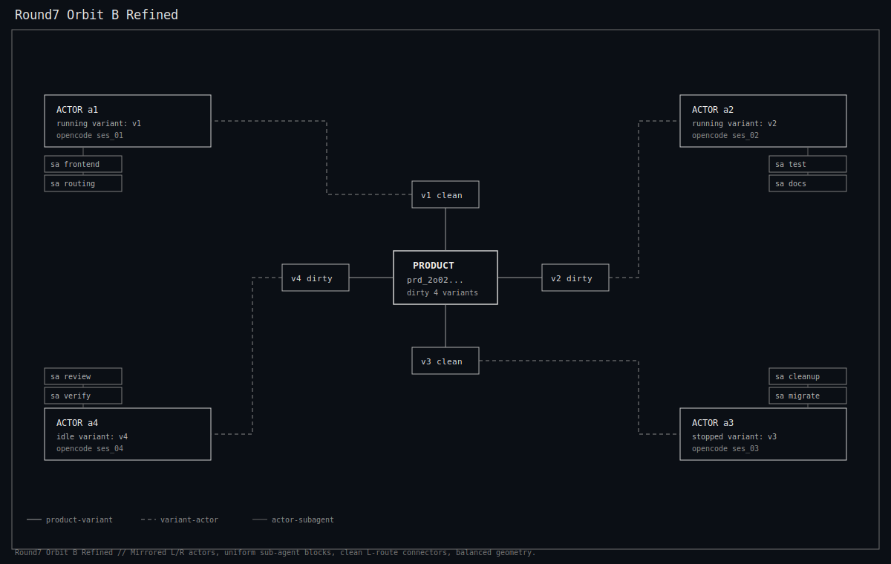
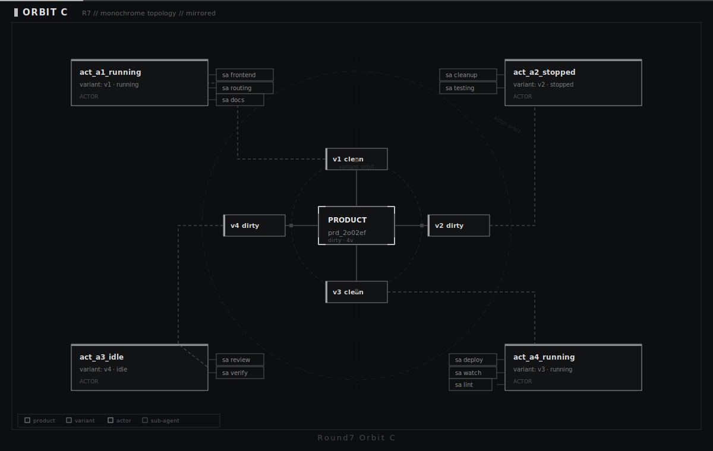

+-------------------------------------------------------------+ | Dark Factory // Graph Node // Round 7 (Filtered) | | | | YAYS kept: | | - Station D | | - Orbit B Refined | | - Orbit C | | | | Designer guardrails for next prompts: | | - NO colorful/fancy styling | | - Monochrome or neutral grays only | | - Boxy terminal monospace layout | | - No glow/gradient/shadow/decorative effects | +-------------------------------------------------------------+
--- KEPT STATION ---
Station D (YAY)
Status: kept
--- KEPT ORBITS ---
Orbit B Refined (YAY)
Status: kept
Orbit C (YAY)
Status: kept
Ref: kept files only in docs/reports/graph-node-round7-*.svg